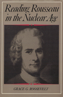

A fresh interpretation of Rousseau's theory of international conflict
A fresh interpretation of Rousseau's theory of international conflict


 A fresh interpretation of Rousseau's theory of international conflict
A fresh interpretation of Rousseau's theory of international conflict

|  |
Reading Rousseau in the Nuclear AgeGrace G. Rooseveltcloth EAN: 978-0-87722-679-6 (ISBN: 0-87722-679-2) |
"A solid contribution to Rousseau studies. It has the special merit of carefully and thoroughly analyzing several important writings of Rousseau on war and on international relations."
—Hilail Gildin, Queens College, C.U.N.Y.
For more than two centuries, the political writings of Jean-Jacques Rousseau have helped shape many different responses to historical experience. While today’s readers are aware of Rousseau’s contemporary significance, his writings on war and peace have been almost completely ignored. This book offers a fresh interpretation of two of Rousseau’s little-known works: his unfinished "The State of War" and his summary and critique of the Abbe de Saint-Pierre’s Project for Perpetual Peace. Starting with an account of her discovery of the original page sequence of Rousseau’s manuscript on "The State of War," Grace G. Roosevelt explores his theory of international conflict and explains his alternative approaches to the problem of securing peace. She brings out the important connections between Rousseau’s theory of international politics and his principles of education, arguing throughout for the continuing relevance of his ideas.
Roosevelt’s main contention is that, when studied in relation to his works on politics and education, Rousseau’s writings on war and peace provide the modern reader with a realistic analysis of the war system and a normative vision of the possibilities for peace. In discussing his principles of education, Roosevelt suggests that Rousseau’s writings challenge us to confront the question of whether educational systems should aim to create citizens of a particular state or citizens of the world.
The book includes full translations, by the author, of Rousseau’s unpublished manuscript on "The State of War" and of his forty-page "Summary" and "Critique" of the Project for Perpetual Peace.
Grace G. Roosevelt is Adjunct Assistant Professor of the Humanities in the General Studies Program at New York University.
© 2015 Temple University. All Rights Reserved. This page: http://www.temple.edu/tempress/titles/696_reg.html.